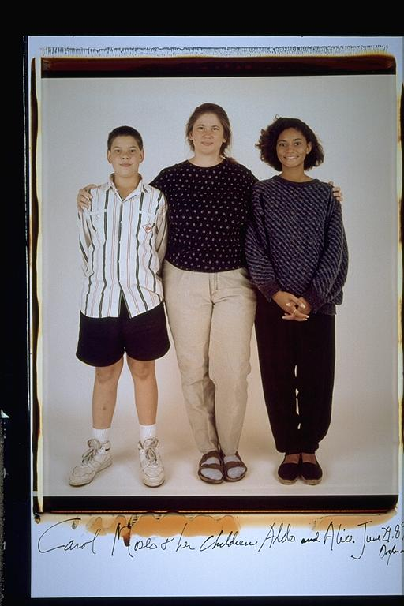

Aldo: Me and family. I think at this age me and my family were really close. I had not yet hit the stage, when it wasn't cool to be seen with your mom, and my sister had just finished it. My sister was off at college, so me and my mom spent a lot of time together at this age. I began to go out a lot more alone and hang out with friends.
Eugene: Aldo's Family(2)-- All I have to say about Aldo at this age in that he was our goalie for the soccer team. And he loved the Denver Broncos and John Elway. He definately lost some serious weight just prior to high school. Carol was so nice to us back then -- she would cook breakfast for us in the morning and pack brown paper bag lunches with juice boxes. And she stayed rocking those Birkenstocks. Alice was always very attractive. She could have been a model. I remember I used to try to act so cool in front for her. Aldo spent a lot of time hanging out with my sister Tasha when she worked at the Mobil station. She would give us advice about girls and pick-up lines. Aldo's family parallels mine in a lot of ways (i.e. single mother with two bi-racial children, one older girl and a younger son). Maybe that's why we get along so well. Who knows?
Isaac: I just read what Eugene wrote about this photo. That is so interesting about Eugene and Aldo both having single moms with one bi-racial younger son and one bi-racial older daughter. I don't think I ever thought about their close bond in that way. I'm the only one whose parents are still together, which might have put some distance between the group and myself at certain times (as if the sports thing wasn't bad enough!) Aldo's sister Alice was always really beautiful. She used to baby-sit me on occasion.
